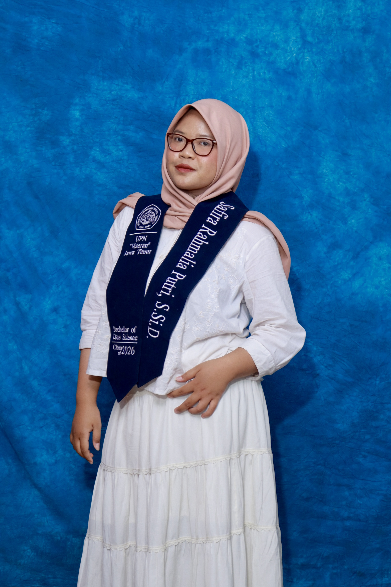

Switch the view above and the projects most relevant to that role move to the front. Click a card for details.
Click each paper to see the main results.
Where I worked with real data. Click a photo to enlarge it and browse the album.
Events I helped organize and communities I helped teach. Click a photo to enlarge it.
Click a certificate to see it in full.
Pick a view above. Everything glows, or only the skills that fit the role you choose.
Open to Data Analyst and Data Scientist roles.